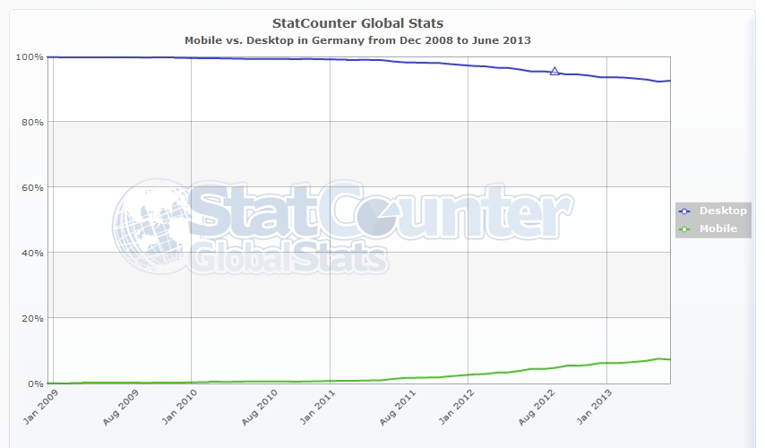
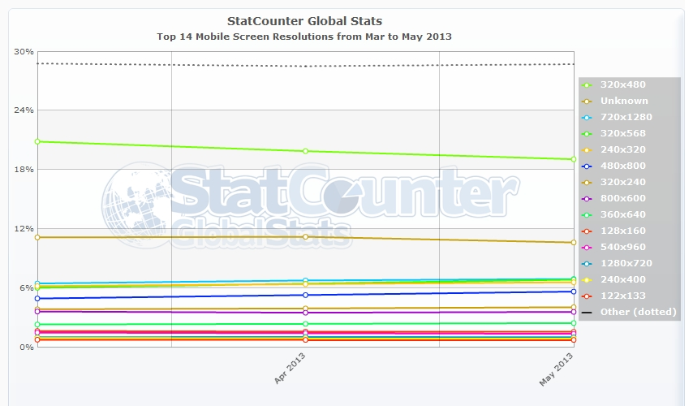

Responsive
Webdesign
Responsive Webdesign?
Responsive Webdesign?
Fragestellungen des Vortrags:
Was versteht man unter Responsive Webdesign?
Was ist der Unterschied zu "mobilen" Seiten?
Warum sollte man Responsive Webdesign einsetzen?
Kurze Begriffsfindung
Was versteht man unter Responsive Webdesign?
Beispiele
http://mediaqueri.es/stuffandnonsense.co.uk
thenextweb.com
Was ist der Unterschied zu "mobilen" Seiten?
| RWD | Mobile Seite |
| gesamte Seite eine Domain | extra Domain für den mobilen Auftritt |
| Das Design passt sich dynamisch der Auflösung an | Das Design wird anhand des Gerätes konfiguriert |
| Conent in jeder Version zugänglich | ausgewählter Content, Content wird teilweise versteckt |
| Content muss nur einmal gepflegt werden | content muss mehrfach gepflegt werden |
| oft nicht sehr performant | performanter |
| schwer zu designen | leicht zu designen |
| laut Google mehr conversion * | laut Google weniger conversion* |
Warum sollte man Responsive Webdesign einsetzen?


StatCounter Mobile vs. Desktop
momentan sind wir bei ~15 % mobilen Zugriffen
StatCounter Mobile Resolution
13 vers. Auflösungen plus "Andere"(~30 %)
Kurze Begriffsübersicht
(nicht technischer Natur)
- RWD
- Responsive Webdesign
- Mobile First
- Design-Philosophie in der der Mobile Auftritt die Priorität besitzt
- Device Experiences
- Auf Geräte abgestimmtes Design
- Content First
- Design-Philosophie in der der Content das Design bestimmt